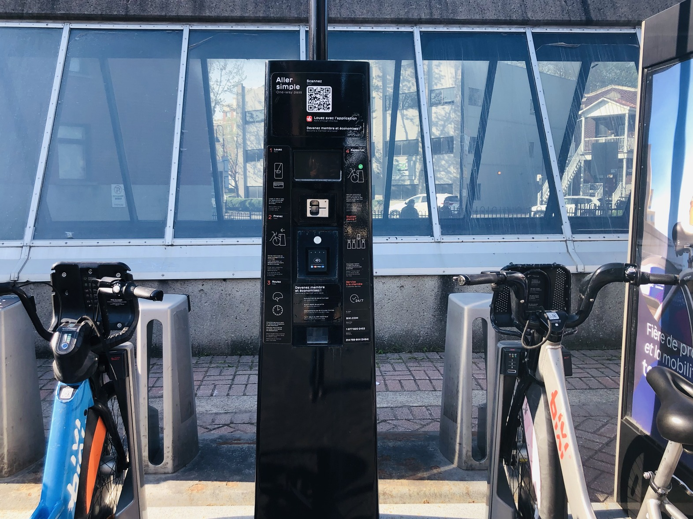

PUBLIC TRANSIT

Bixi was North-America's first large-scale bicycle sharing project. Many other companies' designs of their bikes were inspired by BIXI. For example, CitiBike, New York City's main bike sharing company, modeled their bikes after them. The unique thing about this company is that it has been officially owned by the City of Montreal since 2014. Thanks to how many docking stations there are all around Montreal, these bicycles bonded to the culture of the city. This popularity only increased with the implementation of the electric bikes in 2019. In the summer months, we often see docks that are completely empty because of how often they are used.
How it Works

The concept is pretty simple. Its low price and ease of use is what makes it such a popular option for getting around. Clients can either go for the single uses option or get a subscription. You simply need to install the app and follow the instructions on the dock to unlock the bike from the rack.